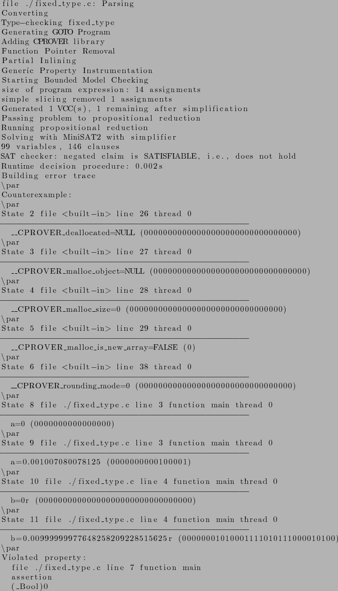

Next: Contract verification example runs Up: Model checking of multicore Previous: Bibliography Contents Index
Below program presents a example of __fixed type.

As we can see from above program assertion will be true, same has been detected using CBCM on static analysis and given a trace of it.

Below program presents a example of __accum type.

As we can see from above program assertion will be true, same has been detected using CBCM on static analysis and given a trace of it.
